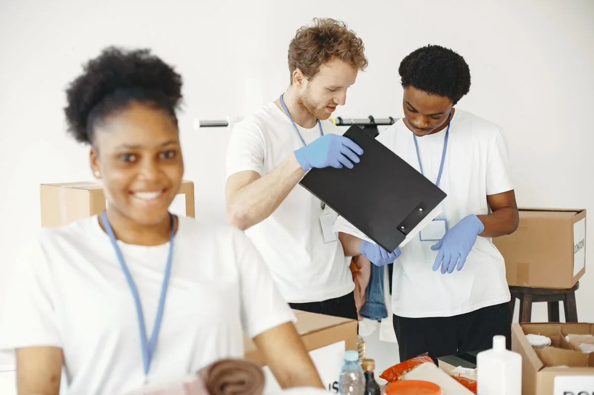
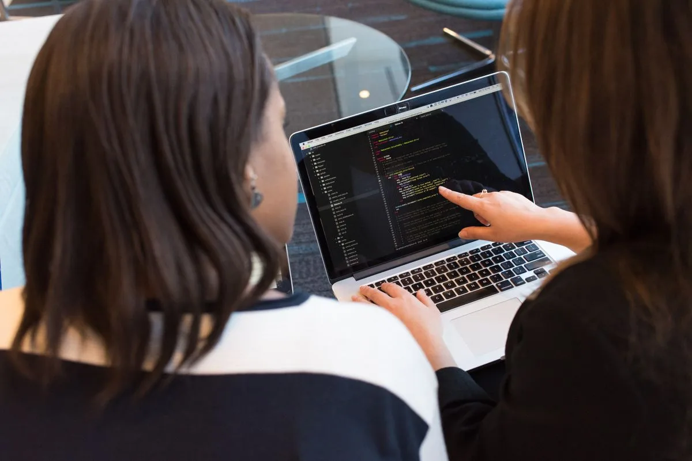

Erasmus+PROGRAMI
ABAVRUPA BİRLİĞİ
ESCDAYANIŞMA

Blog
Yazılar & içgörüler
Avrupa'daki gençlik fırsatlarından Erasmus+ çağrılarına, gençlik katılımından gönüllülük deneyimlerine — YouthTICK topluluğundan ilham veren yazılar ve pratik rehberler.
Hepsi bir arada
Son yazılar

Karar masasında gençler: katılım neden geleceği şekillendirir?
Oku →
Yalova'dan Avrupa'ya: ilk değişimine çıkan gençlerin günlüğü
Oku →
Dijital vatandaşlık: ağ çağında bilinçli ve güvenli gençlik
Oku →
Bir yıl, yeni bir ülke: gönüllülerin (ESC) kendi anlatımıyla
Oku →
Bir Gençlik Hakkı Olarak Yapay Zeka Okuryazarlığı: Dijital Eşitliğe Neden Şimdi İhtiyacımız Var
Oku →
Biyoçeşitlilik Kaybı ve Gençlik Çalışması: Doğanın Programlarınızda Neden Yeri Var
Oku →
İlk Erasmus+ Projenizi Oluşturmak: Adım Adım Zaman Çizelgesi
Oku →
Gençlerde İklim Kaygısı: Çevre Korkusunu Eyleme Dönüştürmek
Oku →
Küresel Çağda Kültürel Kimlik: Genç Avrupalıların 2025'te Söyledikleri
Oku →
Deepfake'ler, Dezenformasyon ve Demokrasi: Gençlik Çalışanlarının Bilmesi Gerekenler
Oku →
Gençlik Çalışanları İçin Tasarım Düşüncesi: 5 Adımlı Pratik Rehber
Oku →
Yapay Zeka Çağında Dijital Vatandaşlık: Gençlik Çalışanları İçin Rehber
Oku →
Türkiye'de Erasmus+: 2026'da Gençlerin Bilmesi Gereken Her Şey
Oku →
Erasmus+ Gençlik Değişimi mi ESC mi: Hangi AB Programı Size Uygun?
Oku →
Yerel Fikirden Avrupa Ölçeğine: Gençlik Öncülüğündeki Kuruluşlardan Dersler
Oku →
Başlangıç Seviyesi Hibe Yazarlığı: İlk Avrupa Gençlik Finansmanı Başvurunuz
Oku →
Gençler İçin Yeşil Beceriler: Neler ve Neden Önemli
Oku →
Yapay Zeka Araçları Gençlik Çalışma Pratiğini Nasıl Dönüştürüyor
Oku →
Ulusal Ajanslar Erasmus+ Gençlik Başvurularını Nasıl Değerlendirir
Oku →
Erasmus+ Başvurusu Nasıl Yapılır: 2026 Adım Adım Rehber
Oku →
Avrupa Parlamentosu Üyenize Nasıl Ulaşırsınız: Genç Avrupalılar İçin Pratik Savunuculuk Rehberi
Oku →
Doğru Erasmus+ Ortakları Nasıl Bulunur (6 Ay Harcamadan)
Oku →
Gönüllüleri Elde Tutmak: İnsanları Gerçekten Meşgul Tutan Stratejiler
Oku →
Anlamlı Bir Gençlik İstişare Süreci Nasıl Yürütülür
Oku →
Topluluğunuzda Gençlik Öncülüğünde Çevre Projesi Nasıl Başlatılır
Oku →
Fon Alan Güçlü Bir Erasmus+ KA1 Başvurusu Nasıl Yazılır
Oku →
Gençlik Çalışmasında Etki Ölçümü: Yaptığınız İşin İşe Yaradığını Kanıtlamak
Oku →
Yerel Demokrasi ve Gençler: Katılım İçin Rehber
Oku →Süper Güç Olarak Çok Dillilik: Gençlik Programlarında Dil Öğrenimi
Oku →
Gençlik Çalışmasında Dini Çeşitlilikle Başa Çıkmak: Pratik Rehber
Oku →
Net Sıfır ve Gençlik: Avrupa'nın 2050 İklim Yol Haritasını Anlamak
Oku →Katılımcı Bütçeleme: Gençler Yerel Harcamaları Kontrol Ettiğinde
Oku →
Gençlik Örgütleri İçin Proje Yönetimi: İşe Yarayan Araçlar ve Yöntemler
Oku →
İkinci Nesil Gençler ve Kültürel Kimlik: İki Dünya Arasında
Oku →
Sosyal Girişim mi STK mı: Hangi Model Gençlik Girişiminize Uyar?
Oku →
Gençlik Grupları İçin Sürdürülebilir Etkinlik Planlaması: Pratik Kontrol Listesi
Oku →
Algoritma ve Genç İnsan: Sosyal Medyanın Gizli Mimarisi
Oku →
Döngüsel Ekonomi ve Gençlik: Yarının Yeşil İşleri İçin Beceriler
Oku →
2026'da İlk Erasmus+ Gençlik Değişiminiz İçin Tam Kılavuz
Oku →
Avrupa Vatandaşları Girişimi: Genç Savunucular İçin Rehber
Oku →
Avrupa Yeşil Mutabakatı: Gençlik Kuruluşları İçin Ne Anlama Geliyor
Oku →YZ Dünyasında Gençlik Çalışmasının Geleceği: Ne Değişiyor, Ne Kalıyor
Oku →Yeşil Nesil: Gençler İklim Politikasını Nasıl Yönlendiriyor
Oku →
Youthpass: Erasmus+ Öğreniminizi Görünür Kılmak
Oku →
Türk-Alman Gençlik Diyaloğu: Değişim Yoluyla Önyargıları Kırmak
Oku →
Erasmus+ KA2'yi Anlamak: STK'lar İçin İşbirliği Projeleri
Oku →
Gençlik Programı Tasarımında YZ Araçlarını Kullanmak: Pratik Rehber
Oku →
Avrupalı Olmak Ne Anlama Geliyor? 2025'te Gençlerin Yanıtları
Oku →
Kültürlerarası Diyalog Gerçekte Nasıl Görünür (İpucu: Dağınık)
Oku →Gençlik Değişimi Nedir? Bilmeniz Gereken Her Şey
Oku →
Yaygın Eğitim Nedir — ve Erasmus+ Neden Onun Üzerine İnşa Edilmiştir
Oku →Z Kuşağı Neden 1960'lardan Bu Yana Her Nesilden Daha Siyasi Olarak Aktif
Oku →
Yalova Erasmus 2026: Bütçe, Ülke Seçimi ve Hazırlık Rehberi
Oku →
Gerçekten İşleyen Gençlik Konseyleri: Avrupa Genelinden Dersler
Oku →
Gençlik Öncülüğündeki Girişimler Avrupa'da Sosyal Etkiyi Yeniden Tanımlıyor
Oku →Youthtick Yalova Gençlik, Erasmus+ ve Uluslararası Fırsatlar Rehberi (2026)
Oku →Youthtick Rehberi: Yalova’daki Üniversite Öğrencileri İçin Erasmus+ Fırsatları
Oku →
Youthtick Rehberi: Yalova’da Dil Okulu ve Yurtdışı Eğitim Alternatifleri
Oku →
Youthtick Rehberi: Yalova’daki STK ve Gençlik Kuruluşları
Oku →
Youthtick Rehberi: Yalova’da Tekmer, OSB ve Teknopark Fırsatları
Oku →Youthtick Rehberi: Yalova Gençlik Toplulukları ve Gönüllülük Yolları
Oku →Youthtick Rehberi: Yalova Genç Girişimcilik Ekosistemi
Oku →Youthtick Yalova Erasmus Başvuru Rehberi 2026: Takvim, Belgeler ve Strateji
Oku →Yalova Gençleri İçin Kariyer Planlama ve İş Piyasası Rehberi
Oku →
Yalova Kültürel Etkinlikler ve Yaratıcı Ağlar
Oku →
Yalova Gençleri İçin Dijital Beceriler ve Uzaktan Çalışma Rehberi
Oku →
Yalova'da Eğitim Desteği ve Mentorluk
Oku →
Yalova GSB Gençlik Merkezleri: Ücretsiz Programlar ve Kayıt Rehberi
Oku →Yalova Gençleri İçin Sağlık ve Wellness Rehberi
Oku →
Yalova Gençleri İçin Uluslararası Ortaklıklar ve Ağlar
Oku →Yalova Gençleri İçin Kişisel Gelişim ve Soft Skills Rehberi
Oku →
Yalova'da Sosyal Girişimcilik ve Etki Odaklı Startuplar
Oku →
Yalova Gençleri İçin Spor ve Aktif Yaşam Programları
Oku →
Yalova'da Sürdürülebilir Yaşam ve Yeşil Projeler
Oku →T3 Vakfı Yalova: Teknoloji, Girişimcilik ve Gençlik Programları Rehberi
Oku →
Kent Konseyi Yalova: Gençlik Katılımı ve Sivil Demokrasi Rehberi
Oku →
Yalova Dil Okulları 2026: Akın Dil ve Seçenekleriniz
Oku →Yalova Kızılay: Gönüllülük Rehberi ve Başvuru Adımları
Oku →Gençlik Meclisi Yalova: Nasıl Üye Olunur ve Neler Kazanılır?
Oku →